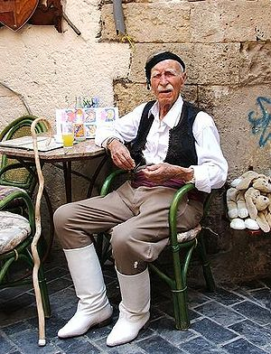
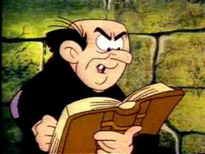

Viejo
 De: La Frikipedia, la enciclopedia extremadamente seria.
De: La Frikipedia, la enciclopedia extremadamente seria.
Dícese de esos seres que hablan poco pero cuando hablan es para contar historias o quejarse. Existen también viejas pero en este artículo sólo nos referimos a los pertenecientes al genero másculino. También se puede definir como viejo a la ultima digievolución de un hombre antes de digievolucionar en cadáver (o sea crepar).
 Nótese la cara: este viejo nunca se dio cuenta de que le tomamos una
foto y falleció sin saberlo (qué lástima).
Orígenes
Son o por lo menos alguna vez fueron humanos, nada más que ya se les han pasado los años y están hechos mierda algo pasaditos de época.
Clases de Viejos
Existen varios tipos de viejos distintos:
- Viejos buena onda (como el Viejo del bastón),
- Viejos que al pasar el tiempo se hacen jóvenes (como el Shang Tsung),
- Viejos con todas sus funciones (Papuchi),
- Viejos suertudos (el creador de Playboy),
- Viejos verdes (Yoda),
- Viejos malos (Gargamel y el Shang Tsung de nuevo)
- Viejos mirones (De esos que te miran descaradamente y tu no sabes por qué)
- Viejos con varias identidades: Viejo que apalizan al principio de "La Naranja Mecánica"
- Viejos fanfarrones que no les gusta mirar ni a su familia.
- Viejos aburridos que te estan dando por el culo diciéndote "Niño, no le pegues a la pared con la pelota.", "Niño, no fumes crack en la puerta de la guardería." o "Niño, no te zumbes a la abuela."
- Los que hacen clases de dibujo tecnologico en el CEAT.
- Los que dan clases de redes CISCO en el IES Terrassa.
Entre sus frases favoritas suelen estar:
- "¿Quien ha cogido la dentadura y la ha puesto dentro de un vaso lleno de ácido y café, y ha puesto el vaso dentro de una piscina llena de tiburones viudos que tienen el SIDA?"
- "Cambia de canal y pon la peli porno que están echando en el canal local, que hoy saldrá la peli que grabé ayer con una octogenaria que no veas como la chupaba sin dientes..."
- "¿ese es gay o es homosesuá?"
- "Yo también he agregado a mi pareja de mus en el feisvuk."
- "¿...y en el guguele ese puedes encontrar una foto de la novia que tuve? Era alta, rubia, ojos azules, dos tetas como para dejar sin hambre al tercer mundo (también conocido como el mundo que consiguió el bronce)...¡anda!¡seguro que está!¡Porque hay 362.428 entradas!"
- "¡¡Niño/a, no juegues en esa acera que está (exactamente) a 163 metros de mi casa!! que me quiero echar la siesta a las 2 del mediodía!!" (o de la tarde como dicen en Plutón y / o / u España).
- "Me la casco y nunca consigo que me suba."
- "¡¡Mira que moza mas golosa!!" (propia de los verdes)
- "Pero bueno,¿quién ha sido el gilipollas que se ha inventado el consolador cuando yo ya no...?"
- "Cuando mi mujer se quita el sujetador siempre se queja de lo frío que está el suelo.
- "En mi tiempo Mozo to' esto era campo.
Sitios en los que se les puede encontrar (hábitat natural)
- Al lado del único sitio del autobús que queda libre (autobús o cualquier vehículo público. Ejemplo: metro) Con cara de pena o de asco.
 Típico viejo aburrido (se dedica a violar pitufos)
- Atracando un banco con "maikel escofil", después de haber tomado viagra y haber hecho su masturbación diaria viendo a los lunnis.
- En el banco que por alguna razón hay cerca de un bar.
- En la ventana de su casa quejándose y diciendo "que hay gente durmiendo" (Nota: sea la hora que sea).
- En un sitio cómodo de tu casa (Sus estados pueden ser:dormido, escuchando la radio, pensando en dominar el mundo, viendo el informativo, contando una historia, haciéndose una paja viendo a Mirtha Legrand, poniéndose morao viendo a una familiar que esté mínimamente buena, jugando con la dentadura (los solteros suelen usarla para hacer como que se la come/chupa alguien), sacándose mocos disimuladamente, viendo los toros).
- En la puerta de su casa, "casualmente" cuando hay menores en la calle (así empezó Michael Jackson y míralo ahora que no se sabe de qué color es).
- En un supermercado justamente delante de ti cuando tu solo vas a comprar una cosa (pan, condones, una botella...) tranquilo aún te espera media hora de espera
- Rodando películas porno en gasolineras abandonadas.
- Por la calle dando un paseo o en un banco... el caso es ver las carnes de menores que pasean inocentemente sin saber que pueden recibir el bocado de una dentadura sin dueño o pueden ser raptadas/os por un viejo (sí, sí, ese que es muy callado y parece el mas educado)
- En un bar tomándose algo con licor y echando a todos los que se sientan cerca porque les cuenta su "magnifico plan para dominar el mundo" y su plan para coger un/a joven y que aparezca al día siguiente sin virginidad y en su bolsillo una dentadura con café (con leche y con agua agria), ácido y un trozo de tiburón viudo con SIDA.
- En grupos de más de dos y menos de seis en las inmediaciones (a veces dentro) de una obra pública (El número de grupos encontrados de entre tres y cinco miembros depende del tamaño de la obra) realizando orgías gays y gerofílicas sin precaución.
Ocupación
La Senectud puede llegar a ser peligrosa
- Llevarse los prismáticos por la noche a un parque para ver a las parejas jóvenes (o no jóvenes)
- Hablar con otros viejos en jerga viejuna para pasar desapercibidos en la sociedad.
- Tomar la sopa a base de chupetones al plato
- Idear la forma de vencer a Sephiroth jugando a las cartas o al dominó (un juego demasiado estratégico para ser comprendido por la humanidad, en la que cada ficha simboliza un eslabón de una mutación a la que se han visto sometidos)
- Jugar a la petanca
- Contar batallitas
- Dirigir el tráfico
- Criticar a la juventud
- Quejarse
- Competir por quien tarda más ducharse
- Escupir flemas
- Adorar a Cyberjesus
Vestimenta
Los mencionados viejunos suelen llevar un hábito bastante característico teniendo en cuenta esa etapa digievolutiva de un humano:
- Suelen llevar unos zapatos negros o color mierda con los que recorren sus largas distancias recopilando información.
- Pantalón de viejuno color gris marengo (en este tipo de pantalones no se notan las manchas de tierra de haber ido a jugar a la petanca)
- Camisa, generalmente de cuadros a juego con una boina que a su vez sigue haciendo juego con el bastón que lleven a modo de defensa de algún cani malnacido que les pida tabaco o dinero. Normalmente los viejunos no alcanzan una gran velocidad en carrera, por lo que son blanco fácil de los canis.
Lo que no saben estos sujetos es que serán las primeras víctimas de la llamada "operación juventud".
Operación juventud
Esta operación consiste (además de hacer que les bombee mas sangre a su parte inferior mediante una revolucionaria operación quirurgico-milagrosa), en hacer un negocio con el consejo de los malignos, formado por George Bush, El señor Glor, Ánsar o Aznar, Davy Jones, Zapatero y Mc Gyver en versión super guerrero.
Dicho trato consiste en dominar poco a poco toda España sometiendo a los niños a fuertes torturas psicológicas (para lo que son especialistas los viejunos, sobre todo los viejos malos o Palpatine y crear un monopolio de empresas de boinas para esclavizar a la población juvenil del mundo y darse el gustazo de poder sodomizarlos, contando ahora con su gran "palito de la alegría" en el mismo estado que tenía hace unos añitos.
Diplomacia viejuna
Los viejunos, pese a aparentar ser una raza alienígena desorganizada y poco comunicada entre sus integrantes están altamente dotados de esta capacidad de establecer una ley de política entre ellos, sin haber lugar a pequeños disturbios (aunque algunos de los viejos están militarmente entrenados en el uso del bastón, son los llamados justicieros). Estas normas son:
- Evitar contacto alguno con la juventud, especialmente si se trata de niños que juegan a la pelota en 1 km a la redonda a su casa.
- No están permitidas las comunicaciones amistosas entre dos viejos, uno de ellos será el abuelo del amigo del nieto del otro viejuno. En estos casos se establece una relación hostil en la que como mínimo una vez en la vida se desencadena una pelea a muerte en secreto en la que el primero en quitarle la dentadura al otro gana; dicha pelea suele estar plagada de artimañas ilegales con las que los viejunos sobreviven en ese combate, aunque gane quien gane tienen que fingir una relación amistosa a ojos de la hija de ambos viejos.
- El sitio por defecto de confraternización por defecto será un parque donde las condiciones de vida de esta especie se hace posible y, además de pasar desapercibidos, van haciendo amistad con otros viejos de su mismo nivel de maldad.
- El enemigo número 1 de todos los viejos palpatine serán los viejos buena onda y los viejos suertudos, a los que al ver se desencadena un desenfrenado duelo mental en el que la furia de los viejos palpatine llega al máximo y se desencadena una transformación en super guerrero en versión viejuna, en la que los viejos adquieren un color rojizo y se acelera la respiración. Los viejos verdes son en este aspecto neutrales, aunque sienten envidia por los viejunos suertudos (como para no sentirla).
Comportamiento de los viejos malvados o palpatine

El viejo agradece tu intento de asesinarlo
Estos viejos, aparte de ser los de menos abundancia entre su raza, suelen tener un comportamiento algo extraño de entender:
- Gusto por la desgracia ajena, que suele expresarse en una gran carcajada que rebosa de maldad, que muestra los amarillentos dientes de su dentadura. Un ejemplo de este caso es el viejo que se ríe de Austin Powers al ver que su padre no está presente.
- Desprecio a las personas más jóvenes, a quienes no les dirigen la palabra aunque sean vecinos suyos; esto es debido a que pueden influir en su plan de dominar el mundo.
- Les gusta llevar ropa estrafalaria que refleja la maldad de su interior: dicha ropa está algo rasgada y suele estar formada por una camisa de cuadros y un pantalón modelo-viejuno, que está complementadas por un bastón de lo mas hosco posible y con una gran cantidad de nudos, para infundir pavor a todo buen ciudadano que quiera acercarse.
- Uso de expresiones como:
- Sinvergüenza
- Ese e homosesuá
- ¡Esos namas quieren vení a robá!
- Es pa pegarle un palazo en la cabeza a cada uno
- Si yo fuera el presidente aquí no quedaba nadie
- ¡Esos son unos estafadores!¡Unos sinvergüenzas!
Autor(es):
- Krusher
- Nexo
- Doctor grijander
- Lance Bean
- Ordoñez
- Frikiman
- Aque
- Roms
- Alucard Hellsing
- Khazike Khashondo
Frikipedia 2005-2016, Licencia
GFDL 1.2 - Extraído por FrikiLeaks